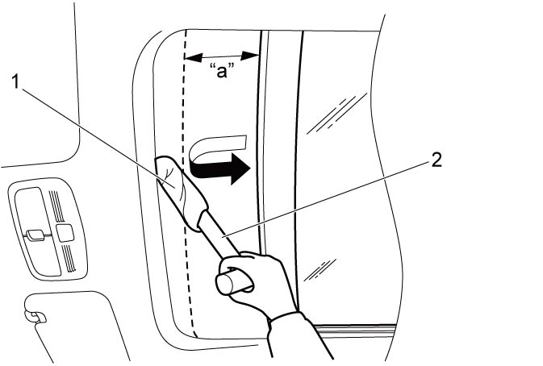

9I
| Sun Roof Motor Initialization |
NOTICE:
If an object is trapped during the sun roof motor initialization, the initialization is failed and the anti-pinching function is disabled.
Do not pinch any object during the sun roof motor initialization.
1)Set ignition “ON”, and press “CLOSE” side of sun roof switch to fully slide close sunshade.
2)Keep pressing “CLOSE” side of sun roof switch for more than 10 seconds and then release it.
3)Set ignition “OFF” for initialization of the closing position.
4)Set ignition “ON”, press “PUSH TILT” side of sun roof switch and check that sunshade opens fully and then glass opens by tilt-up operation.
5)Press “PUSH TILT” side of sun roof switch again and check that glass closes by tilt-down operation.
6)Conduct slide open / close operation pressing “OPEN” / “CLOSE” of the sun roof switch just a little and check that manual functions work normally.
7)Conduct auto slide open / close operation pressing “OPEN” / “CLOSE” of the sun roof switch a bit longer and check that auto functions work normally. Repeat from Step 1) if any auto function is faulty.
8)Conduct anti-pinching function check.
Anti-Pinching Function Check
NOTICE:
If the sun roof pinches the hard part of the hammer handle or the like which is not wrapped with cloth, the roof of the vehicle may be damaged.
To avoid the roof damage, wrap hammer handle or the like with cloth for anti-pinching function test.
1)Slide open sun roof glass or sunshade fully.
2)Place hammer handle (2) wrapped with cloth (1) close to fully closed position.


 "Expand image")
| [A]: | About 125 mm (4.92 in.) |
3)Perform auto slide close of sun roof glass or sunshade.
4)Check that sun roof glass or sunshade reverses automatically about 125 mm (4.92 in.) from the position the hammer handle is lightly pinched.
If defect is found, initialize sun roof motor (for sun roof glass) or sun roof motor (for sunshade).
If defect is found, initialize sun roof motor (for sun roof glass) or sun roof motor (for sunshade).